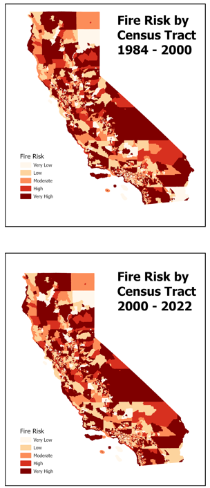

Research Questions
What factors increase fire hazards in California?
How do areas with greatest fire hazard risk compare to vulnerable populations?
Skills Demonstrated
- Zonal Statistics and in-ArcGIS Pro calulcations: Using zonal statistics, calculating geometries, and calculating fields, the overall risk of fire hazard was calculated.
- Linear Regression: A linear regression was run to discover the factors that had the most influence in the fire hazard risk of a county.
Results
First, the factors that influenced wildfires had to be determined. The factors that were considered for fire risk were: land cover type(vegatated land vs. not vegatated), mean temperature, number of electrical substations, impervious surface, and population density. Two regressions were then run, one with wildfire information from 1984-2000 and one with wildfire information from 2000-2022. The beta coefficients from these regressions were then used as the coefficients in calulcating the risk of wildfire in each county. They landcover type appeared to present the strongest infuence on wildfire occurance along with population density and mean temperature.
The next step was then to calculate the fire risk in each county and map it. The coefficients found in the previous step were used as weights in joining the data together to create an overall risk score. All of the data created before had number values, except for the landcover type which was reclassified in binary as 1 for vegtated and 0 non-vegtated land cover types. The image below displays the mapped output of the fire risk map. The darker red that the county is the high the risk of wildfire is.
Next a map was created of the areas that were more vulnerable in cases of disasters. The factors used in this study were: poverty, minority population, elderly population, and population under 5. The counties then got established a score of 1-4 on each category depending on which quartile they were a part of. A composite column was then created of the overall vulnerability, applying equal weight to each category. The mapped product can be viewed below./p>